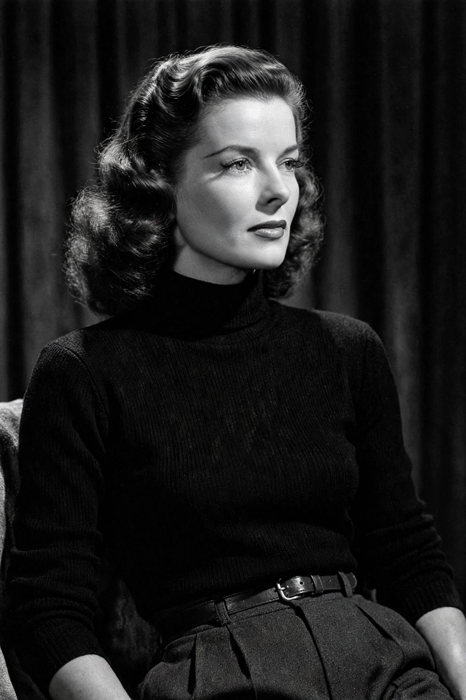

Katharine Hepburn

Katharine Houghton Hepburn (May 12, 1907 – June 29, 2003) was an American actress whose career as a leading lady in Hollywood spanned 66 years. Known for her headstrong independence, spirited personality, and outspokenness, she won a record four Academy Awards for Best Actress and was named the greatest female star of Classic Hollywood Cinema by the American Film Institute.
Early life
Hepburn was born in Hartford, Connecticut, to Thomas Hepburn, a urologist, and Katharine Houghton Hepburn, a suffragist and birth-control advocate. Educated at Bryn Mawr College, she began acting on stage before making her film debut in A Bill of Divorcement (1932).
Career
Hepburn won her first Oscar for Morning Glory (1933) and found success with Little Women (1933) and Alice Adams (1935), but a string of commercial failures in the late 1930s — despite acclaimed work in Bringing Up Baby (1938) — led exhibitors to label her "box office poison." She engineered her own comeback, buying the rights to The Philadelphia Story and starring in its hit 1940 film version. Her nine films with Spencer Tracy, including Woman of the Year (1942) and Adam's Rib (1949), were among her most popular. Later triumphs included The African Queen (1951), Summertime (1955), Suddenly, Last Summer (1959), and Long Day's Journey into Night (1962), followed by Academy Awards for Guess Who's Coming to Dinner (1967), The Lion in Winter (1968), and On Golden Pond (1981).
Public image and legacy
Hepburn defied convention: she wore trousers when it was socially unacceptable for women, refused the studio publicity machine, and cultivated an image of fierce autonomy that reshaped ideals of American womanhood. She died at her family home in Fenwick, Connecticut, in 2003, aged 96.